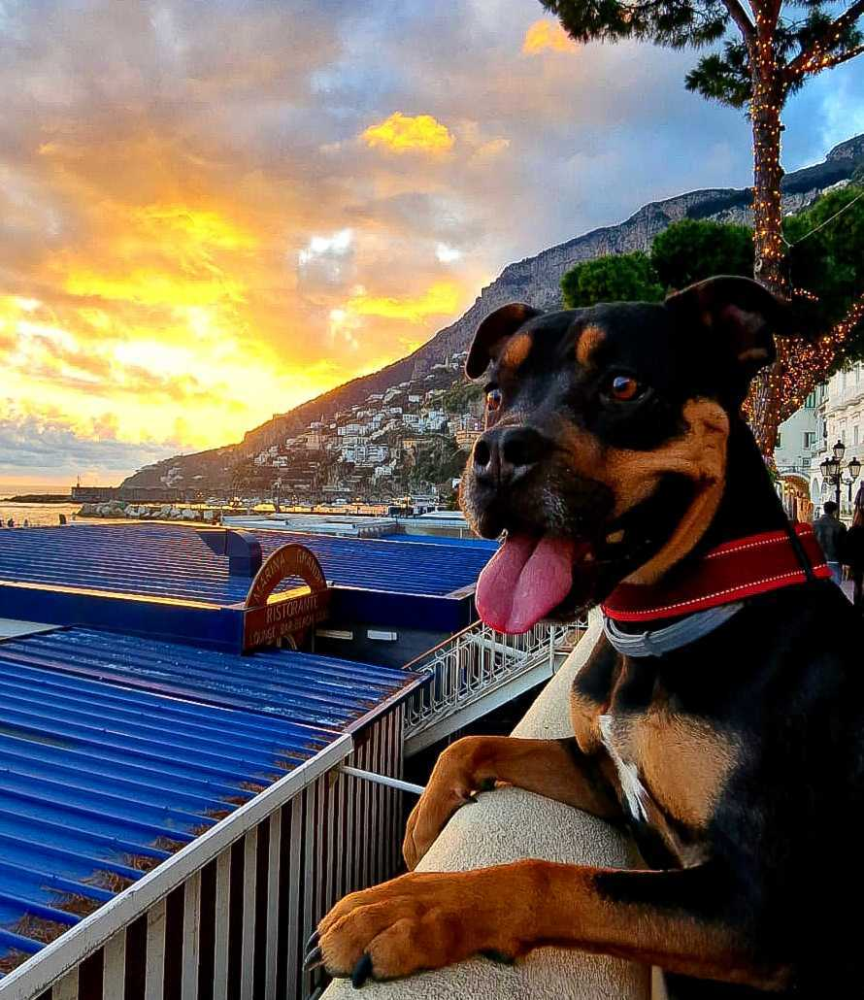

Trabajo estable
La mudanza está vinculada a una oportunidad profesional concreta en Inditex.
Alquiler en Galicia
Buscamos una vivienda en Oleiros o A Coruña para instalarnos con estabilidad y empezar esta etapa con una base sólida.
Actualmente vivimos en Sicilia, Italia, y nos estamos relocalizando por una oportunidad profesional y académica real. Queremos un hogar tranquilo, bien conectado y con luz natural.
Buscamos una relación de alquiler clara, respetuosa y de largo plazo.
Por qué nos mudamos
Nuestro traslado a España forma parte de un proyecto de vida real y pensado. Fran recibió una oportunidad profesional en el área de IT de Inditex, y eso nos lleva a relocalizarnos a la ciudad con una base sólida de trabajo y continuidad.
Carolina es fisioterapeuta, especializada en neurorehabilitación, y actualmente cursa un máster en España. Queremos instalar nuestra vida en un lugar que nos permita sostener ese crecimiento profesional sin perder la calma del día a día.
Por eso buscamos una vivienda que no solo encaje con nuestras necesidades actuales, sino que también nos permita construir una relación seria y respetuosa con quien nos alquile.
La mudanza está vinculada a una oportunidad profesional concreta en Inditex.
Carolina continúa su desarrollo académico con un máster en España.
Somos cuidadosos, responsables y estamos listos para mostrar documentación y referencias.
Quiénes somos
Hoy vivimos en Sicilia, Italia, y estamos dando este paso por motivos reales: trabajo, formación y proyecto de vida. No buscamos una solución temporal, sino una vivienda donde podamos instalarnos con calma y cumplir con total seriedad.
La mudanza está ligada a una oportunidad profesional concreta en Inditex.
Vivimos una relocalización pensada, con fechas, bases y objetivos definidos.
Buscamos trato directo, ordenado y de largo plazo con la propiedad.
Fran
Profesional del área IT, con una oportunidad laboral concreta en Inditex. La mudanza está vinculada a continuidad profesional y a una organización estable desde el primer día.
Carolina
Fisioterapeuta especializada en neurorehabilitación, con experiencia en el área y actualmente cursando un máster en España. Esto refuerza una mudanza pensada y con recorrido.
Como pareja
Compartimos más de una década de historia, hábitos de vida tranquilos y una convivencia muy cuidada. Valoramos la transparencia, el orden y una relación seria con quien nos alquile.
Nuestra búsqueda
Estamos buscando alquiler en Galicia, con prioridad en Oleiros y en la zona de A Coruña. Nos interesan ubicaciones tranquilas, bien conectadas y que nos permitan llevar una vida ordenada desde nuestra base actual en Sicilia, Italia.
Nuestro objetivo es encontrar un lugar donde podamos quedarnos con estabilidad, cuidar el espacio y construir una relación de confianza con el propietario.
Confianza y solvencia
Podemos compartir la información necesaria para acreditar nuestra situación laboral y académica.
Contamos con base económica para cumplir con los pagos en tiempo y forma.
Tenemos referencias de propietarios anteriores y una convivencia sin problemas en Sicilia, Italia.
Buscamos una relación de alquiler clara, respetuosa y de largo plazo, donde ambas partes se sientan cómodas y tranquilas.
Percy

Percy vive con nosotros como un miembro más de la familia. Es un perro cuidado, sociable y acostumbrado a convivir en interiores con rutina, paseo y respeto por el espacio. Además, le hacemos o compramos su baño ecológico exterior, así que tiene su propio baño afuera.
Sabemos que tener un perro puede generar dudas. Por eso preferimos ser transparentes desde el inicio y mostrar que Percy forma parte de una convivencia responsable.
Contacto
Podemos enviar información adicional, documentación o referencias si lo necesitás. La idea es hacer el proceso simple, transparente y cómodo para ambas partes.